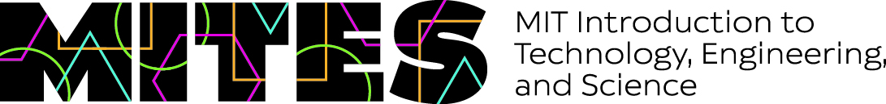
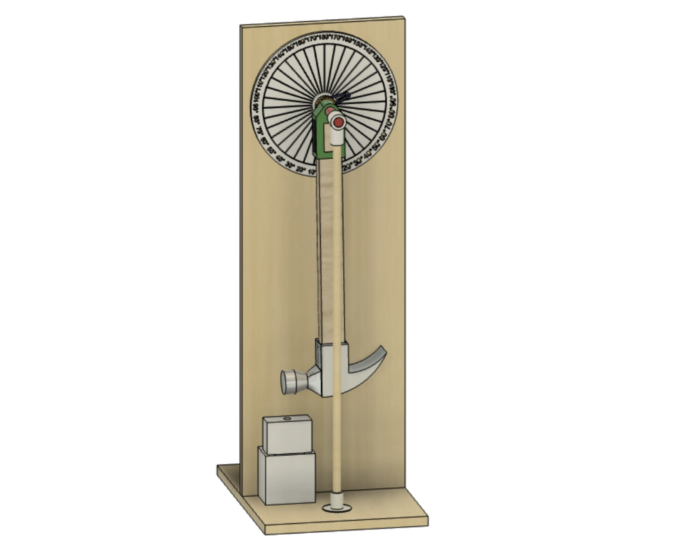

MITES Semester

MITES semester logo
MITES Semester, formerly MOSTEC, is a semester long program offered to high school seniors in the United States.
Courses: Materials Science

The Izod impact test contraption that I made to test the impact strength of the straws.
The materials science course, taught by Jaclyn Cho, was focused on teaching students fundamental concepts
of materials and how they operate. Specifically, there was a large focus on grain structures, fractures, and
molecular bonding. There was also a final symposium where my group presented a research project on the materials
properties of eco-friendly straw alternatives, mainly bamboo.
Courses: Science Writing
Thermaleletric Generators (TEGs) is what I wrote my science article on.
Another course that I took was the science writing course. Even though I wasn't confident about my writing,
it was through this course where I found an aspect of writing that I enjoyed: sharing knowledge. As part of the
course, I was given the opportunity to write a science article on a topic of my choice. It didn't take much
thinking to choose to write about TEGs, or thermaleletric generators. It was through this opportunity that I
had the chance to dig deeper into something that I enjoyed as well as being able to interview professors such as
James LeBeau and Liping Liu.